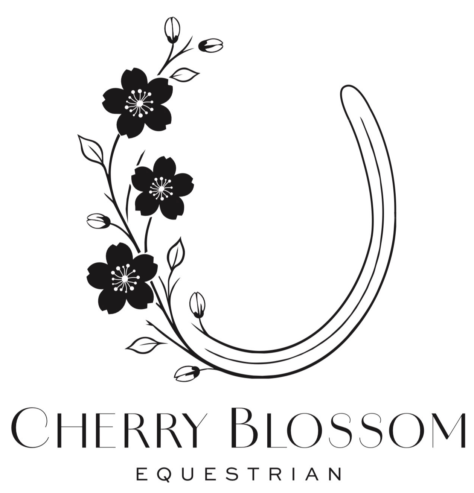

A premier Equestrian Center in the North Metro Atlanta area, specializing in competitive hunter/jumper lesson programs and dedicated support for riders on local and rated circuits. The full digital home for Cherry Blossom Equestrian is currently in training, in the meantime...
Meet Our Head Trainer
Charity Durgin
Welcome to Cherry Blossom Equestrian
With more than 25 years of experience in the equestrian industry, Charity Durgin brings a lifetime of horsemanship, competitive success, program management, and a genuine passion for developing confident, educated horses and riders to Cherry Blossom Equestrian.
Use the navigation menu to explore Charity's background, competitive accomplishments, horse-first philosophy, and teaching approach.
A Lifetime in the Equestrian Industry
Charity began riding at age 13 and quickly immersed herself in every aspect of the equestrian world. Being homeschooled gave her the unique opportunity to spend extensive time in the barn from an early age, gaining invaluable hands-on experience with horses both on the ground and in the saddle.
Her professional career began in the Eventing discipline, where riding a wide variety of horses helped establish the adaptable and thoughtful approach to training that remains central to her philosophy today.
At 18, Charity joined Huntcliff Equestrian Centre in Sandy Springs, Georgia, where she continued developing as a professional rider and instructor. Her time there provided extensive experience teaching, riding a variety of horses, attending competitions, and learning the daily operation of a successful equestrian program.
In 2006, Charity joined Falcon Ridge Stables, beginning what would become a nearly 20-year chapter of her career.
During a period in which Charity held USEF amateur status, she stepped away from professional riding and teaching activities and returned to the show ring as an Adult Amateur. During this time, she also managed the Atlanta Tack Shack, allowing her to remain closely involved in the equestrian community while pursuing her own competitive goals.
Competitive Accomplishments
Charity’s personal competitive accomplishments include championship honors at the Winter Equestrian Festival (WEF), along with numerous championships and class wins in the Adult Equitation and Adult Hunters on the rated circuit. Her success in these divisions earned her the opportunity to compete at several of the country’s prestigious Indoor Finals, as well as qualify for the Ariat National Adult Medal Finals five consecutive years.
Her accomplishments also include winning the Southeast Adult Medal Final and GHJA Adult Medal Final, earning GHJA Adult Hunter championship honors, and receiving numerous year-end tricolors and honors through GHJA and USHJA.
Charity competed at some of the country’s most prestigious horse shows, including the Pennsylvania National Horse Show in Harrisburg, Washington International Horse Show, and Capital Challenge Horse Show, competing in the Adult Hunters and Adult Equitation.
Developing Horses & Riders
After returning to professional status, Charity transitioned back into professional riding, teaching, and program management at Falcon Ridge Stables. Over the following years, her responsibilities grew to include managing a large lesson and training program, riding and developing horses, teaching riders of varying ages and experience levels, and overseeing many aspects of daily farm operations.
Working alongside Sharon Enteen, Charity helped develop and coach riders who achieved success from the local level through the national stage.
Students from the program qualified for and competed at prestigious championships including USEF Pony Finals, USEF Junior Hunter Finals, Pennsylvania National Horse Show, Washington International Horse Show, Capital Challenge Horse Show, NHS and ASPCA Maclay Finals, along with numerous medal finals, rated championships, and GHJA year-end High Point and tricolor awards.
Some of the most rewarding moments of her career have come from helping a nervous rider regain confidence, developing a struggling horse-and-rider partnership, watching a student finally understand a concept they have worked hard to master